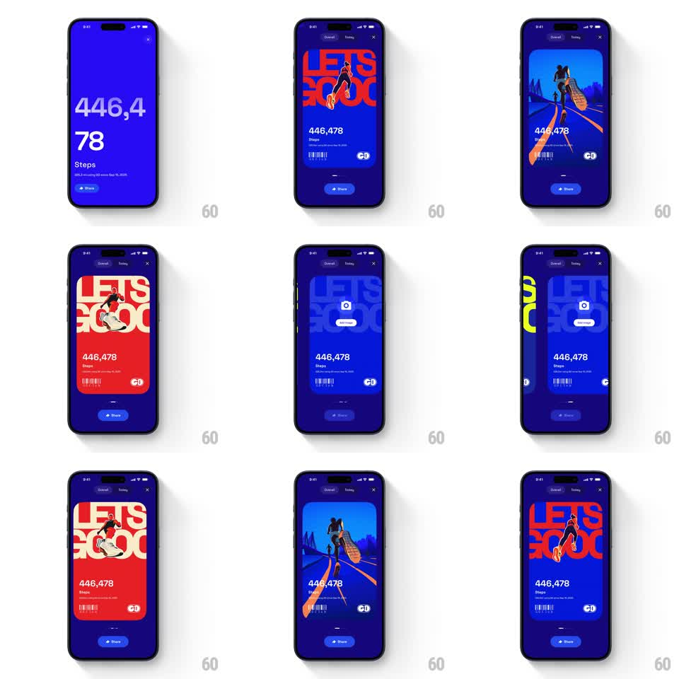

Media
Frame-by-frame

Rebuild this interaction 1:1: GO Club's share-card carousel - a stats screen ("446,478 Steps") with a stack of bold share cards ("LET'S GOOO" typography, runner artwork, barcode) that swipe horizontally with spring physics and expand full-screen on tap.

Rebuild this interaction 1:1: GO Club's share-card carousel - a stats screen ("446,478 Steps") with a stack of bold share cards ("LET'S GOOO" typography, runner artwork, barcode) that swipe horizontally with spring physics and expand full-screen on tap.
## Integration
Integration: stack-agnostic spec - springs given as stiffness/damping, timed motions as duration + curve; map every value to your framework and animation library of choice.
## Scene
Deep blue stats screen: oversized step count, "Steps" label, date subline, and a Share pill. Sharing reveals a card carousel: each card is a poster variant - huge condensed "LET'S GOOO" headline (red on cream, or outlined on blue), a runner illustration, the step count, a barcode strip, and the GO logo. Behind the active card, the next cards peek from the sides. Top shows an Overall | Today segmented control and a close (x).
## Motion spec
Pattern: spring-loaded horizontal card carousel + tap-to-expand.
- Entrance: the active card rises from the Share button position (spring ~280/20) while neighbor cards slide in at ~85% scale on both edges.
- Swipe: cards track the finger 1:1; release flings with velocity and the nearest card snaps to center (spring ~320/22); incoming card scales 0.85 -> 1, outgoing drops to 0.85 and dims slightly.
- Expand: tapping the active card scales it to full-bleed (spring ~260/18), the segmented control and Share button fade out, and a camera/share affordance fades in at center.
- Collapse: tapping again (or close) shrinks the card back into the carousel (reverse spring).
## Calibration
- Neighbor cards must stay partially visible - the peek is what sells the carousel.
- The expand keeps the card's content continuous; no cross-fade to a different layout.
## Reduced motion
Swipes snap without fling momentum (250ms ease-out); expand/collapse cross-fade (200ms).
## Don't miss
- Card variants share one layout system: oversized headline, runner, stat, barcode - only colors and artwork swap.
- The barcode strip and GO logo are part of the poster design; include them.